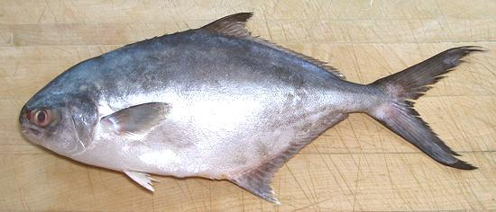

Pompano (Paloma)

[Silver Pompano (market, incorrect); Trachinotus paitensis]
The Paloma Pomapno is a highly desirable eating fish, but not well known
due to its limited range, and that it is not currently farmed. It is
found close to the coast from Southern California to Peru, and around
the Galapagos Islands. It is a minor commercial catch through this range.
All three of the specimens I purchased had a slight golden blush along
the lower flanks, typical of the species, but not visible
in the photo.This fish can grow to 20 inches, but are commonly 12
inches. The photo specimen was 14 inches and weighed 15-1/4 ounces.
More on Pompano Family
This pompano is a medium flavor fish with flesh that holds together
well enough for most modes of cooking, but should go into soups and
stews near the end. The flesh is near white except for a darker strip
down the centerline right under the skin, but that dark flesh does not
have a strong or oily flavor. The flesh breaks up easily on the plate,
but is fine grained and doesn't flake in an orderly way. My favorite
way to eat this fish is to dust fillets with lightly salted rice flour,
pan fry gently, and eat with a dip of
Lemon Wine Sauce for
Fish
Buying:
This fish is a minor commercial catch and not
farmed, so it is not commonly found in fish markets - it's a "buy it
when you see it" fish. The photo specimen was 14 inches long and weighed
15-1/2 ounces. It was purchased from a Philippine fish market in Los
Angeles (Eagle Rock) for 2019 US $2.99 / pound (on ice). The price is
modest (Golden Pompano was $3.99) because this fish is unfamiliar to
most of the customers. The fish was sold as "Silver Pompano", which
is not correct.
Scales:
Paloma Pompano has only an incomplete covering
of tiny scales that scrape off as a slush without making a mess. They
are mainly on the aft 1/3 of the fish.
Cleaning:
This is a somewhat Deep Bodied Fish, but it
has no hard keel, so work with it by our instructions for
Cleaning and Filleting Round Bodied
Fish. The body cavity extends a little beyond the vent, but is
not difficult to clean out. The gills pull rather hard, and tend to
break up, so a strong pair of long nose pliers is a great help. There
are also grinding stones in the throat for crushing shells, and the
pliers help here too. There is a tough membrane at the top of the body
cavity that has to be scraped out to get at the blood works just under
the backbone.
Filleting:
This is about as easy a fish to fillet as
you're going to find. The bone structure is complete and easy to follow
with the knife and you can end up with a "see through" skeleton with
almost no flesh on it. Cut from the top down to the backbone, then
hop the backbone at the tail and work forward. When you get to the rib
cage, just cut the ribs from the backbone with kitchen shears. The ribs
pull fairly easily and quite cleanly with long nose pliers, but do
tend to break a bit. There is also a row of substantial centerline pin
bones for the length of the body cavity - pull them straight forward.
Go deep, because they are mostly near the skin, and they break up a
lot, so feel for fragments.
Skin:
The skin is fairly strong and feels a little
leathery, but has no strong or off flavor. It has fairly severe shrink
when fried or poached, but quickly looses its strength and adhesion.
When frying skin-on, do the skinless side first, then turn and gently
press the fillet flat. Poaching skin-on, the fillet will curl sharply,
but will flatten out completely when placed on the plate.
If you wish a skinless fillet, the standard long knife and cutting
board Method works fine. Add the skins
to the stock pot with the heads, bones and fins. The skin is easily
peeled from a cooked fish if you desire to do that. I usually use this
fish skin-on. For baking or steaming, make a few shallow diagonal cuts
just through the skin.
Yield:
A 15-1/4 ounce fish yielded 9 oz of fillet skin-on
(59%), 7.92 ounces skinless (52%) - a very good yield.
Stock:
The head, bones, fins and skins make a very nice
fairly light soup stock. There will be little oil, but remove what there
is using your gravy separator. See
Method.
sf_pomppz.html 190504 - www.clovegaren.com
©Andrew Grygus - info@clovegarden.com - Photos on
this page © cg1 - Linking to and
non-commercial use of this page permitted